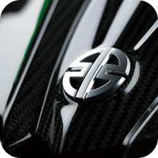

KAWASAKI H2
프리미어프로, 약 6시간
KAWASAKI H2 광고
가와사키사의 유명한 바이크H2를
애프터 이펙트와 프리미어 프로로 이용 하여
제작해본 광고 영상입니다. 타이포 그래픽과
세계최초 시속 400Km바이크라는 걸 강조하고 싶었습니다.
프리미어프로, 약 6시간
가와사키사의 유명한 바이크H2를
애프터 이펙트와 프리미어 프로로 이용 하여
제작해본 광고 영상입니다. 타이포 그래픽과
세계최초 시속 400Km바이크라는 걸 강조하고 싶었습니다.